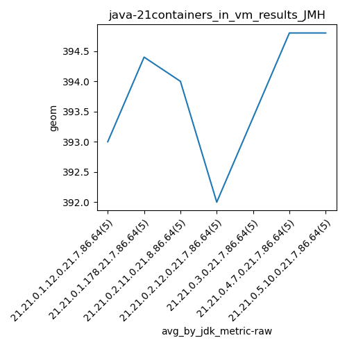
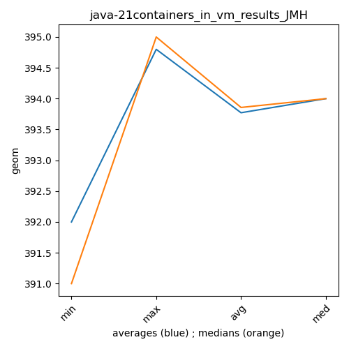

java-21 JMH
Context at bottom
/home/jvanek/git/benchmarks-in-nested-virtualisation-toolchain/final_results/containers_in_vm_results/containers_in_vm_results_JMH
java-21
JMH
containers_in_vm_results_JMH
final score
Expected number of java-21 JDKs: 7
1st avgmed_alljdks_metric:
/home/jvanek/git/benchmarks-in-nested-virtualisation-toolchain/final_results/result_processing.py /home/jvanek/git/benchmarks-in-nested-virtualisation-toolchain/final_results/containers_in_vm_results/containers_in_vm_results_JMH geom False
values: [390, 396, 394, 393, 392, 393, 396, 394, 394, 395, 394, 395, 390, 395, 396, 391, 390, 395, 393, 391, 394, 395, 395, 389, 394, 396, 395, 395, 395, 393, 394, 394, 396, 395, 395]

Expected number of iterations: 5
final number of values: 35 out of 35
Pass rate: 100.0%
values: (389, 396, 393.77142857142854, 394)

** accuracy from all jdks and runs
more is better
MIN: 389
MAX: 396
AVG: 393.77142857142854
MED: 394
Relative differences 1:
MIN-MAX: 2.0 %
MIN-AVG: 1.0 %
MIN-MED: 1.0 %
MAX-MIN: -2.0 %
MAX-AVG: -1.0 %
MAX-MED: -1.0 %
AVG-MED: 0.0 %
stored to java-21.properties. sort | uniq that!
2nd avgmed_by_jdk_metric:
values: [393.0, 394.4, 394.0, 392.0, 393.4, 394.8, 394.8]

values: [393, 394, 395, 391, 394, 395, 395]

values: (392.0, 394.8, 393.7714285714286, 394.0)
values: (391, 395, 393.85714285714283, 394)

** accuracy from all jdks where runs were avged
more is better
MIN: 392.0
MAX: 394.8
AVG: 393.7714285714286
MED: 394.0
Relative differences 1:
MIN-MAX: 1.0 %
MIN-AVG: 0.0 %
MIN-MED: 1.0 %
MAX-MIN: -1.0 %
MAX-AVG: -0.0 %
MAX-MED: -0.0 %
AVG-MED: 0.0 %
stored to java-21.properties. sort | uniq that!
** accuracy from all jdks where runs were medianed
more is better
MIN: 391
MAX: 395
AVG: 393.85714285714283
MED: 394
Relative differences 1:
MIN-MAX: 1.0 %
MIN-AVG: 1.0 %
MIN-MED: 1.0 %
MAX-MIN: -1.0 %
MAX-AVG: -0.0 %
MAX-MED: -0.0 %
AVG-MED: 0.0 %
stored to java-21.properties. sort | uniq that!
/home/jvanek/git/benchmarks-in-nested-virtualisation-toolchain/final_results/containers_in_vm_results/containers_in_vm_results_J2DBENCH
java-21
JMH
/home/jvanek/git/benchmarks-in-nested-virtualisation-toolchain/final_results/containers_in_vm_results/containers_in_vm_results_RADARGUNs3
java-21
JMH
/home/jvanek/git/benchmarks-in-nested-virtualisation-toolchain/final_results/containers_in_vm_results/containers_in_vm_results_SPECJBB
java-21
JMH
/home/jvanek/git/benchmarks-in-nested-virtualisation-toolchain/final_results/containers_in_vm_results/containers_in_vm_results_RADARGUNs1
java-21
JMH
/home/jvanek/git/benchmarks-in-nested-virtualisation-toolchain/final_results/containers_in_vm_results/containers_in_vm_results_DACAPO
java-21
JMH
pass rates:
containers_in_vm_results_JMH=100.0%
Context:
- containers_in_vm_results
- JMH